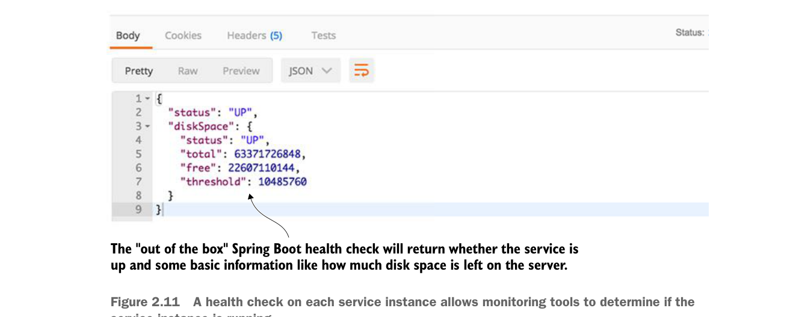

Health check Spring Boot sẵn có sẽ trả về dịch vụ có đang hoạt động hay không và một số thông tin cơ bản như còn bao nhiêu dung lượng đĩa trên máy chủ.

Health check trên từng instance dịch vụ cho phép công cụ giám sát xác định instance dịch vụ có đang chạy hay không.
Nếu bạn gọi endpoint http://localhost:8080/health trên dịch vụ licensing, bạn sẽ thấy dữ liệu sức khỏe được trả về. Hình 2.11 cung cấp ví dụ về dữ liệu được trả về.
Như bạn có thể thấy ở hình 2.11, health check có thể không chỉ là chỉ báo cho biết điều gì đang hoạt động và điều gì không. Nó còn có thể cung cấp thông tin về trạng thái máy chủ mà instance microservice đang chạy trên đó. Điều này cho phép trải nghiệm giám sát phong phú hơn nhiều.1
2.5 Kết hợp các góc nhìn
Microservice trên cloud có vẻ đơn giản một cách đáng lừa. Nhưng để thành công với chúng, bạn cần có một cái nhìn tích hợp kết hợp góc nhìn của kiến trúc sư, lập trình viên và kỹ sư DevOps thành một tầm nhìn gắn kết. Những điểm then chốt cần ghi nhớ cho từng góc nhìn này là
- Kiến trúc sư—Tập trung vào các đường nét tự nhiên của bài toán nghiệp vụ của bạn. Mô tả domain bài toán nghiệp vụ và lắng nghe câu chuyện bạn đang kể. Mục tiêu
1 Spring Boot cung cấp rất nhiều tùy chọn để tùy biến health check của bạn. Để biết thêm chi tiết, hãy tham khảo cuốn sách xuất sắc Spring Boot in Action (Manning Publications, 2015). Tác giả Craig Walls trình bày một cái nhìn toàn diện về tất cả các cơ chế khác nhau để cấu hình Spring Boot Actuator.